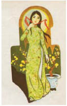

Jacob đã từng rất nhiều lần ở trong những lâu đài bị yểm bùa. Mỗi cánh cửa có thể là một hiểm họa, và những cái bẫy chờ sẵn cuối mỗi hành lang. Những cầu thang biến mất. Những bức tường mở ra. Nhưng không phải ở đây. Những cánh cửa, đại sảnh, sân vườn rộng mở. Anh nghe tiếng cung điện của Guismund hít thở như đang ở trong cổ họng của một con vật, quá khứ lên men trong cơ quan nội tạng bằng đá của nó như một liều thuốc độc khó tiêu hóa.
Tiếng ngựa cào cào móng guốc trong những cái chuồng trống trơn. Tiếng vũ khí leng keng trong những sân vườn bỏ hoang, những ngôi sao vẫn ẩn mình trong mây đen bao phủ phía trên. Giọng trẻ con vang khắp những căn phòng không người ở. Những con chó vô hình sủa anh. Và lúc nào cũng có những tiếng thét vang dội khắp các lối đi và đại sảnh tăm tối. Những tiếng thét sợ hãi. Những tiếng thét đau đớn... Jacob cảm thấy sự điên loạn của Guismund như bụi bẩn bám trên da anh.
Anh tìm thấy những căn phòng chất đầy kho báu đến tận trần, các phòng chứa vũ khí với áo giáp và những thanh kiếm quý mà chỉ bán đi một thanh trong số đó cũng đủ để sửa sang lâu đài của lão Valiant, nhưng Jacob chẳng buồn nhìn chúng lấy một lần. Cây nỏ thần ở đâu?
Anh tự hỏi có phải lẽ ra anh nên chọn một hành lang khác hay không, và cứ nhìn mãi cây nến trong tay mình, nhưng ngọn lửa vẫn cháy đều đặn. Có lẽ Cáo cũng không gặp may hơn anh.
Cậu phải nhanh chân lên, bạn của tôi.
Lẽ ra cậu phải bắn chết gã Goyl.
Anh đã phải quay người lại cả tá lần vì nghe thấy tiếng bước chân sau lưng mình, nhưng tất cả những gì đang bám theo anh chỉ là những hồn ma mà anh đã đánh thức. Có lẽ đó là phép thuật của Guismund: khiến họ đi lang thang trong cung điện của ông ta cho đến khi lạc lối trong quá khứ và trở thành một trong những bóng ma mà giọng nói đã theo ám họ.
Một cánh cửa nữa.
Rộng mở như những cánh cửa khác.
Đại sảnh sau cánh cửa có vẻ như đã từng là đại sảnh để yết kiến đức vua. Những viên gạch lát sàn in hàng trăm dấu ủng, tro của những bó đuốc đã tàn lụi từ lâu dính trên vữa trát tường bị gió mưa tàn phá. Jacob có thể cảm nhận được cơn thịnh nộ như làn khói cay sè, nỗi thất vọng, sự căm ghét. Những giọng nói đang thì thầm, bị kìm nén bởi nỗi sợ hãi.
Đi tiếp đi, Jacob.
Trên cánh cửa ở cuối đại sảnh đính huy hiệu của Guismund.
Anh bước qua cánh cửa - và hít một hơi thật sâu.
Anh đã đến đích.
Đại sảnh đặt ngai vàng của Guismund cũng làm quá khứ sống dậy, nhưng không phải bằng những giọng nói. Jacob chỉ nghe thấy tiếng bước chân của chính mình vang vọng trong thinh lặng, nhưng cũng như trong hầm mộ, ở đây thế giới đã mất của Guismund bị đánh thức bằng những bức họa trên tường và trần nhà. Những màu sắc hiện lên trong ánh sáng của một bầy ma trơi. Những chiến trường, cung điện, người khổng lồ, những con rồng, một đạo quân người lùn, một hạm đội đang chìm xuống đáy biển sâu, thành phố đổ nát ngoài kia đầy ắp người. Những tuyệt tác được vẽ trên tường đẹp đến nỗi làm Jacob trong phút chốc quên mất vì sao mình đến đây. Đặc biệt bức vẽ trên bức tường bên trái khiến anh phải ngừng lại. Một toán kỵ sĩ đang phi nước đại qua một cổng vòm bằng bạc, gươm cầm trên tay. Họ mặc đồng phục trắng như những kỵ sĩ của Guismund, phù hiệu thêu trên đó là một thanh kiếm màu đỏ, phía trên thanh kiếm là một chữ thập đỏ... Anh đã trông thấy huy hiệu này ở đâu rồi? Brothers of the Sword, Jacob. Một giáo phái của những kỵ sĩ trong thế giới của anh, đã biến mất hơn tám trăm năm trước, sau khi chiếm được những vùng rộng lớn ở Bắc Âu... Jacob nhìn lên cổng vòm. Những bông hoa bằng sắt phủ đầy trên cổng.
Jacob luôn tự hỏi liệu có phải chỉ có một chiếc gương.
Rõ ràng câu trả lời là Không.
Anh nhìn quanh tìm kiếm. Chính giữa đại sảnh đặt một ngai vàng. Một cầu thang hẹp dẫn lên chiếc ghế bằng đá. Tay vịn và lưng ghế bọc đệm bằng vàng, một bức tượng chân dung của Guismund trừng trừng nhìn xuống Jacob với đôi mắt trống rỗng. Nhưng ánh mắt anh đang tìm kiếm một cái gương. Nó kia rồi, ở phía cuối đại sảnh. Nó rất khổng lồ, gần gấp đôi tấm gương trong phòng của cha anh. Kính trên tấm gương cũng có màu đen, nhưng những bông hoa trên khung gương không phải hoa hồng, mà là hoa lily, giống như trên cổng vòm trong bức tranh tường.
Một bộ xương đứng bên cạnh, với chiếc đồng hồ vàng trên bàn tay xương xẩu. Vào thời của Guismund ở thế giới này vẫn chưa có đồng hồ chạy bằng máy. Nhưng ở thế giới bên kia gương đã có.
Jacob! Chỉ có cơn đau trong lồng ngực mới nhắc nhớ anh vì sao anh ở đây. Anh xoay lưng lại tấm gương rồi bước về phía ngai vàng.
Bức tượng đang ngồi trên đó mặc một chiếc áo choàng của phù thủy làm từ lông mèo, nhưng nó cho thấy Guismund không chỉ là một vị vua, ông ta còn là một chiến binh. Chiếc mũ ôm lấy khuôn mặt ông ta có hình dạng như cái mõm đang há ra của một con chó sói. Bên dưới lớp áo khoác là một áo giáp bằng lưới sắt dài ngang gối và chiếc áo choàng rộng không tay màu trắng thêu thanh gươm đỏ bên trên. Jacob đã rất nhiều lần trông thấy vòng tròn bạc bao xung quanh thanh kiếm mà không liên tưởng đến gì khác. Giờ đây anh thấy nó chẳng khác gì khung một tấm gương. Guismund ngồi bệ vệ như bá chủ của thế giới này. Sau khi ông ta đã đến đây từ một thế giới khác.
Dưới chân những bậc thang là một chiếc ghế đẩu. Trên lớp nệm bọc vàng là cây nỏ thần.
Jacob thổi tắt nến.
Những viên gạch lát sàn dưới chân anh biến thành một bức tranh bằng đá màu hình tròn với huy hiệu của Guismund. Chiếc ghế đẩu đứng ngay vị trí phía trên đầu con sói đội vương miện.
Jacob chỉ còn cách chiếc ghế đẩu vài bước thì con bướm ma cắn phát cuối cùng.
Anh khuỵu gối. Không thấy gì, không nghe gì, cũng chẳng cảm thấy gì ngoài cơn đau. Nó như axit ăn mòn chữ cái cuối cùng trong trí nhớ anh và Hắc Tiên đã lấy lại tên nàng. Rồi con bướm ma hiện ra từ trên da anh. Nó lột cái xác đầy lông lá từ da thịt anh như từ một chiếc kén máu me và bắt đầu vỗ cánh. Jacob nghe tiếng thét vì đau đớn của chính mình vang vọng khắp đại sảnh, anh oằn người trên huy hiệu của Guismund trong lúc con bướm ma vỗ cánh bay lên trở về với nữ chủ nhân của nó, mang theo tên của nàng ta và cả mạng sống của anh nữa. Tất cả những gì nó để lại là dấu ấn trên da thịt sống của anh, anh nằm đó và chờ tim mình ngưng đập. Nó đập nhanh và vấp váp, như thể muốn bám lấy chút sự sống còn sót lại trong cơ thể anh.
Đứng dậy, Jacob. Nhưng anh không biết phải làm sao. Anh chỉ muốn cơn đau này kết thúc, chuyến đi săn này mau chóng qua đi. Và Cáo lại ở bên cạnh anh.
Đứng dậy, Jacob. Vì cô ấy.
Anh cảm thấy những viên đá lạnh ngắt xuyên qua lớp áo anh đang mặc và trên làn da đã tê dại vì đau đớn.
Đứng dậy nào.